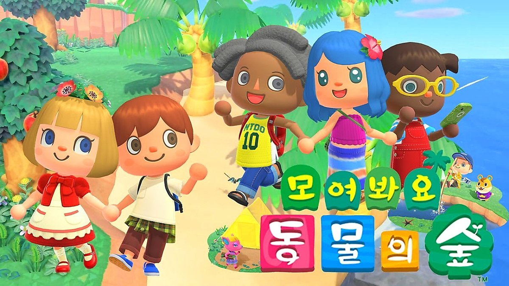

· 검사결과 ·
나와 어울리는 플래시 게임은
동물의 숲
(ENFJ)

경쟁적이기 보다는 더 좋은 공동체를 꾸려가는데 관심이 많은 당신에게는 ‘동물의 숲’을 추천합니다!
아무것도 없는 섬에서 부터 자신만의 섬을 꾸미는 일은 책임감이 강하고 계획적인 당신에게 딱 일 것 같은데요?! 섬의 곳곳에 카페부터 시작해서 온천, 오락실까지 조금씩 조금씩 완성해 보아요! 미래지향적인 당신에게는 아무것도 없는 섬의 모습도 전혀 문제 될게 없을 거에요!
혼자 하면 조금 심심할 수도 있으니 친구들을 섬의 주민으로 초대해 같이 살고 꾸미는 것은 어떤가요?! 그렇게 정성스럽게 꾸민 섬들을 나중에 sns에 자랑할 수 도 있겠죠?
당신은 누군가를 위해 한달음에 달려갈 수 있는 사람이에요. 주민들끼리 의견이 안맞는다면 의견을 조율하며 때론 당신의 의견도 내려놓을 줄 아는 사람이죠.
하지만 선넘는 행동들은 금지! 자신에게도 남에게도 적용되는 규칙이에요! 다른 사람의 장점을 잘 찾아내는 당신 덕분에 섬은 더 행복할 수 있을거예요!
지금 당장 닌텐도 스위치를 들고 모든 주민들이 만족하고 행복할 수 있는 섬을 만들어 볼까요?
아무것도 없는 섬에서 부터 자신만의 섬을 꾸미는 일은 책임감이 강하고 계획적인 당신에게 딱 일 것 같은데요?! 섬의 곳곳에 카페부터 시작해서 온천, 오락실까지 조금씩 조금씩 완성해 보아요! 미래지향적인 당신에게는 아무것도 없는 섬의 모습도 전혀 문제 될게 없을 거에요!
혼자 하면 조금 심심할 수도 있으니 친구들을 섬의 주민으로 초대해 같이 살고 꾸미는 것은 어떤가요?! 그렇게 정성스럽게 꾸민 섬들을 나중에 sns에 자랑할 수 도 있겠죠?
당신은 누군가를 위해 한달음에 달려갈 수 있는 사람이에요. 주민들끼리 의견이 안맞는다면 의견을 조율하며 때론 당신의 의견도 내려놓을 줄 아는 사람이죠.
하지만 선넘는 행동들은 금지! 자신에게도 남에게도 적용되는 규칙이에요! 다른 사람의 장점을 잘 찾아내는 당신 덕분에 섬은 더 행복할 수 있을거예요!
지금 당장 닌텐도 스위치를 들고 모든 주민들이 만족하고 행복할 수 있는 섬을 만들어 볼까요?
검사자 총
73,591명 중
나와 같은 유형을 가진 사람은
2,346명 입니다.